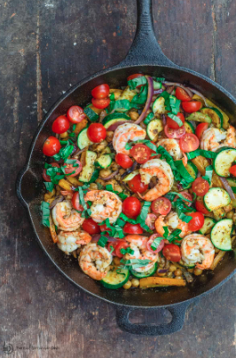

This simple Mediterranean-style sautéed shrimp and vegetables recipe comes together in just over 20 minutes! Zucchini, onions, and bell pepper, paired with succulent shrimp, and protein-packed chickpeas come together in just one skillet. And you'll love the bold Mediterranean flavors from spices, tangy lemon juice, and fresh herbs.
